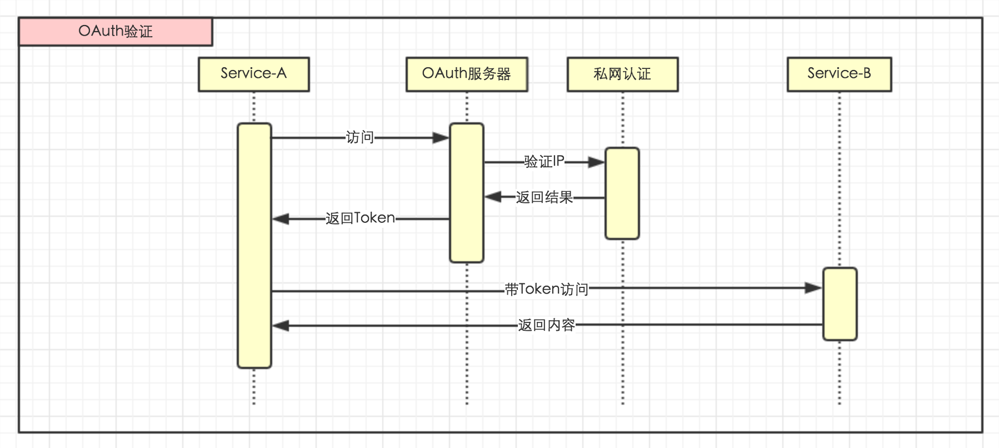

<!DOCTYPE HTML>
<html>
<head><meta name="generator" content="Hexo 3.9.0">
  <meta charset="utf-8">
  <meta http-equiv="X-UA-Compatible" content="IE=edge">
  <meta name="apple-mobile-web-app-capable" content="yes">
  <meta name="apple-mobile-web-app-status-bar-style" content="black">
  <meta name="google-site-verification" content>
  
  <title>微服务化改造系列之四：授权中心</title>
  <meta name="author" content="Emac">
   <meta name="description" content="前情概要：

微服务化改造系列之一：总览
微服务化改造系列之二：服务注册中心
微服务化改造系列之三：配置中心


授权中心概述这篇文章是微服务化改造系列的第四篇，主题是授权中心。有了服务注册中心和配置中心，下一步应该就可以发起服务调用了吧？Wait, 还有一个关键问题要解决。不同于单体应用内部的方法">
  

  <meta property="og:title" content="微服务化改造系列之四：授权中心">
  <meta name="viewport" content="width=device-width, initial-scale=1, maximum-scale=1">
  <meta property="og:site_name" content="Emac">
 <meta property="og:image" content="undefined">
  
  <link href="/apple-touch-icon-precomposed.png" sizes="180x180" rel="apple-touch-icon-precomposed">
  <link rel="alternate" href="/atom.xml" title="Emac" type="application/atom+xml">
  <link rel="stylesheet" href="//cdn.bootcss.com/bootstrap/3.3.6/css/bootstrap.min.css">
  <link rel="stylesheet" href="//cdn.bootcss.com/font-awesome/4.5.0/css/font-awesome.min.css">
  <link rel="stylesheet" href="/css/m.min.css">
  <link rel="icon" type="image/x-icon" href="/favicon.ico">
</head>
</html>
<body>
  <div id='wx_pic' style='display:none;'></div>
  <div id="main">
    <div class="behind">
      <div class="back">
        <a href="/" class="black-color"><i class="fa fa-times" aria-hidden="true"></i></a>
      </div>
      <div class="description">
        &nbsp;拾贝
      </div>
    </div>
    <div class="container">
      

  <article class="standard post">
    <div class="title">
      
  
    <h1 class="page-title center">
        微服务化改造系列之四：授权中心
    </h1>
  


    </div>
    <div class="meta center">
      
<time datetime="2016-12-03T16:00:00.000Z">
  <i class="fa fa-calendar"></i>&nbsp;
  2016-12-04
</time>


    
    &nbsp;
    <i class="fa fa-tag"></i>&nbsp;
    <a href="/categories/arch/">arch</a>


    
    &nbsp;
    <i class="fa fa-tag"></i>&nbsp;
    <a href="/tags/原创/">原创</a>·<a href="/tags/微服务/">微服务</a>


    </div>
    <hr>
    <div class="picture-container">
      
    </div>
    <blockquote>
<p>前情概要：</p>
<ul>
<li><a href="http://emacoo.cn/arch/microservice-overview">微服务化改造系列之一：总览</a></li>
<li><a href="http://emacoo.cn/arch/microservice-registry-center/">微服务化改造系列之二：服务注册中心</a></li>
<li><a href="http://emacoo.cn/arch/microservice-config/">微服务化改造系列之三：配置中心</a></li>
</ul>
</blockquote>
<h2 id="授权中心概述"><a href="#授权中心概述" class="headerlink" title="授权中心概述"></a>授权中心概述</h2><p>这篇文章是微服务化改造系列的第四篇，主题是授权中心。有了服务注册中心和配置中心，下一步应该就可以发起服务调用了吧？Wait, 还有一个关键问题要解决。不同于单体应用内部的方法调用，服务调用存在一个服务授权的概念。打个比方，原本一家三兄弟住一屋，每次上山打猎喊一声就行，后来三兄弟分了家，再打猎就要挨家挨户敲门了。这一敲一应就是所谓的服务授权。</p>
<p>严格来说，服务授权包含鉴权（Authentication）和授权（Authorization）两部分。鉴权解决的是调用方身份识别的问题，即敲门的是谁。授权解决的是调用是否被允许的问题，即让不让进门。两者一先一后，缺一不可。为避免歧义，如不特殊指明，下文所述授权都是宽泛意义上的授权，即包含了鉴权。</p>
<p>常见的服务授权有三种，简单授权，协议授权和中央授权。</p>
<ul>
<li>简单授权：服务提供方并不进行真正的授权，而是依赖于外部环境进行自动授权，比如IP地址白名单，内网域名等。这就好比三兄弟互相留了一个后门。</li>
<li>协议授权：服务提供方和服务调用方事先约定一个密钥，服务调用方每次发起服务调用请求时，用约定的密钥对请求内容进行加密生成鉴权头（包含调用方唯一识别ID），服务提供方收到请求后，根据鉴权头找到相应的密钥对请求进行鉴权，鉴权通过后再决定是否授权此次调用。这就好比三兄弟之间约定敲一声是大哥，敲两声是二哥，敲三声是三弟。</li>
<li>中央授权：引入独立的授权中心，服务调用方每次发起服务调用请求时，先从授权中心获取一个授权码，然后附在原始请求上一起发给服务提供方，提供方收到请求后，先通过授权中心将授权码还原成调用方身份信息和相应的权限列表，然后决定是否授权此次调用。这就好比三兄弟每家家门口安装了一个110联网的指纹识别器，通过远程指纹识别敲门人的身份。</li>
</ul>
<p>一般来说，简单授权在业务规则简单、安全性要求不高的场景下用的比较多。而协议授权，比较适用于点对点或者C/S架构的服务调用场景，比如<a href="http://docs.aws.amazon.com/AmazonS3/latest/API/sig-v4-header-based-auth.html" target="_blank" rel="noopener">Amazon S3 API</a>。对于网状结构的微服务而言，中央授权是三种方式中最适合也是最灵活的选择：</p>
<ol>
<li>简化了服务提供方的实现，让提供方专注于权限设计而非实现。</li>
<li>更重要的是提供了一套独立于服务提供方和服务调用方的授权机制，无需重新发布服务，只要在授权中心修改服务授权规则，就可以影响后续的服务调用。</li>
</ol>
<h3 id="OAuth"><a href="#OAuth" class="headerlink" title="OAuth"></a>OAuth</h3><p>说起具体的授权协议，很多人第一反应就是OAuth。事实上也的确如此，很多互联网公司的开放平台都是基于OAuth协议实现的，比如<a href="https://developers.google.com/identity/protocols/OAuth2" target="_blank" rel="noopener">Google APIs</a>, <a href="http://mp.weixin.qq.com/wiki/4/9ac2e7b1f1d22e9e57260f6553822520.html" target="_blank" rel="noopener">微信网页授权接口</a>。一次标准的OAuth授权过程如下：</p>
<p></p>
<p>对应到微服务场景，服务提供方相当于上图中的Resource Server，服务调用方相当于Client，而授权中心相当于Authorization Server和Resource Owner的合体。</p>
<p>想了解更多关于OAuth的信息，可移步<a href="http://oauthlib.readthedocs.io/en/latest/oauth2/oauth2.html" target="_blank" rel="noopener">OAuth2</a>或者<a href="http://www.ruanyifeng.com/blog/2014/05/oauth_2_0.html" target="_blank" rel="noopener">OAuth2中文版</a>。</p>
<h3 id="Beared-Token"><a href="#Beared-Token" class="headerlink" title="Beared Token"></a>Beared Token</h3><p>在标准的OAuth授权过程中，Resource Server收到Client发来的请求后，需要到Authorization Server验证Access Token，并获取Client的进一步信息。通过OAuth 2.0版本引入中的Beared Token，我们可以省去这一次调用，将Client信息存入Access Token，并在Resource Server端完成Access Token的鉴权。主流的Beared Token有<a href="http://samltool.io/" target="_blank" rel="noopener">SAML</a>和<a href="https://jwt.io/introduction/" target="_blank" rel="noopener">JWT</a>两种格式，SAML基于XML，而JWT基于JSON。由于大多数微服务都使用JSON作为序列化格式，JWT使用的更为广泛。</p>
<h2 id="框架选型"><a href="#框架选型" class="headerlink" title="框架选型"></a>框架选型</h2><p>在选型OAuth框架时，我主要调研了<a href="https://github.com/apereo/cas" target="_blank" rel="noopener">CAS</a>,<a href="http://oltu.apache.org/" target="_blank" rel="noopener">Apache Oltu</a>,<a href="http://projects.spring.io/spring-security-oauth/" target="_blank" rel="noopener">Spring Security OAuth</a>和<a href="https://github.com/OAuth-Apis/apis" target="_blank" rel="noopener">OAuth-Apis</a>，对比如下：</p>
<p></p>
<p>不考虑实际业务场景，CAS和Spring Security OAuth相对另外两种框架，无论是集成成本还是可扩展性，都有明显优势。前文提到，由于我们选用了Spring Boot作为统一的微服务实现框架，Spring Security OAuth是更自然的选择，并且维护成本相对低一些（服务端）。</p>
<h2 id="最终方案"><a href="#最终方案" class="headerlink" title="最终方案"></a>最终方案</h2><p>最后我们基于Spring Security OAuth框架实现了自己的服务授权中心，鉴权部分做的比较简单，目前只支持私网认证。大致的服务授权流程如下：</p>
<p></p>
<p></p>
<p>值得一提的是，除了服务调用，我们的服务授权中心还增加了SSO的支持，通过微信企业号实现各个服务后台的单点登录/登出，以后有机会再详细介绍。</p>
<h2 id="冰山一角"><a href="#冰山一角" class="headerlink" title="冰山一角"></a>冰山一角</h2><p>至此，这个微服务化改造系列就算告一段落，等以后有了更多的积累，我会继续写下去。微服务是一个很大的话题，自Martin Fowler于<a href="http://martinfowler.com/articles/microservices.html" target="_blank" rel="noopener">2014年3月</a>提出以来，愈演愈热，并跟另一个话题容器化一起开创了一个全新的DevOps时代，引领了国内外大大小小各个互联网公司的技术走向，也影响了我们这一代程序员尤其是后端和运维的思维方式。从这个角度说，我写这个微服务化改造系列文章也是偶然中的必然，希望能给读过这些文章的你带来一些新的启发和思考。如果你对微服务也感兴趣或者有一些心得想跟我交流，欢迎在<a href="https://github.com/emac/emac.github.io/issues/1" target="_blank" rel="noopener">赞赏榜</a>上留下你的微信号。</p>
<blockquote>
<p>少年读书如隙中窥月，中年读书如庭中望月，老年读书如台上玩月，皆以阅历之浅深为所得之浅深耳。– 张潮 《幽梦影》</p>
</blockquote>
<h2 id="参考"><a href="#参考" class="headerlink" title="参考"></a>参考</h2><ul>
<li><a href="http://oauthlib.readthedocs.io/en/latest/oauth2/oauth2.html" target="_blank" rel="noopener">OAuth2</a> - <a href="http://www.ruanyifeng.com/blog/2014/05/oauth_2_0.html" target="_blank" rel="noopener">中文版</a></li>
<li><a href="https://jwt.io/introduction/" target="_blank" rel="noopener">JWT</a></li>
<li><a href="https://github.com/apereo/cas" target="_blank" rel="noopener">CAS</a></li>
<li><a href="http://oltu.apache.org/" target="_blank" rel="noopener">Apache Oltu</a></li>
<li><a href="https://github.com/OAuth-Apis/apis" target="_blank" rel="noopener">OAuth-Apis</a></li>
<li><a href="http://projects.spring.io/spring-security-oauth/" target="_blank" rel="noopener">Spring Security OAuth</a></li>
<li><a href="http://projects.spring.io/spring-security-oauth/docs/oauth2.html" target="_blank" rel="noopener">OAuth 2 Developers Guide</a> </li>
<li><a href="https://blog.yorkxin.org/2013/09/30/oauth2-implementation-differences-among-famous-sites" target="_blank" rel="noopener">各大網站 OAuth 2.0 實作差異</a></li>
<li>参考示例：<a href="https://github.com/spring-projects/spring-security-oauth/tree/master/samples" target="_blank" rel="noopener">spring-security-oauth</a></li>
</ul>


  </article>
  </script>
    <script async src="https://dn-lbstatics.qbox.me/busuanzi/2.3/busuanzi.pure.mini.js">
  </script>
  <div class="busuanzi center">
    页阅读量:&nbsp;<span id="busuanzi_value_page_pv"></span>&nbsp;・&nbsp;
    站访问量:&nbsp;<span id="busuanzi_value_site_pv"></span>&nbsp;・&nbsp;
    站访客数:&nbsp;<span id="busuanzi_value_site_uv"></span>
  </div>


    </div>
  </div>
  <footer class="page-footer"><div class="clearfix">
</div>
<div class="right-foot container">
    <div class="firstrow">
        <a href="#top" >
        <i class="fa fa-arrow-right"></i>
        </a>
        © emacoo.cn 2015-2020
    </div>
    <div class="secondrow">
        <a href="https://github.com/gaoryrt/hexo-theme-pln">
        
        </a>
    </div>
</div>
<div class="clearfix">
</div>
</footer>
  <script src="//cdn.bootcss.com/jquery/2.2.1/jquery.min.js"></script>
<script src="/js/search.js"></script>
<script type="text/javascript">

// comments below to disable loading animation
function revealOnScroll() {
  var scrolled = $(window).scrollTop();
  $(".excerpt, .index-title, .index-meta, p").each(function() {
    var current = $(this),
      height = $(window).outerHeight(),
      offsetTop = current.offset().top;
    (scrolled + height + 50 > offsetTop) ? current.addClass("animation"):'';
  });
}
$(window).on("scroll", revealOnScroll);
$(document).ready(revealOnScroll)

// disqus scripts


// dropdown scripts
$(".dropdown").click(function(event) {
  var current = $(this);
  event.stopPropagation();
  $(current).children(".dropdown-content")[($(current).children(".dropdown-content").hasClass("open"))?'removeClass':'addClass']("open")
});
$(document).click(function(){
    $(".dropdown-content").removeClass("open");
})

// back to top scripts
$("a[href='#top']").click(function() {
  $("html, body").animate({ scrollTop: 0 }, 500);
  return false;
});


var path = "/search.xml";
searchFunc(path, 'local-search-input', 'local-search-result');

</script>

</body>
</html>
